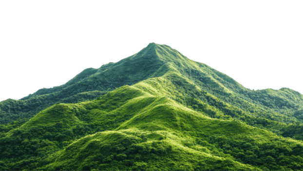

Academic Elegance • Quiet Luxury
日初觀山
溪湖高中旁 ・ 境美別墅聚落

Scroll
溪湖高中旁 ・ 境美別墅聚落

理想的家，不該只是鋼筋水泥的構築，而是您對生活品質的溫柔理解。
在溪湖核心，我們為您築起一座靜謐的人文棲所。
外觀採用洗鍊的水平線條，結合塗料、木格柵與木紋磚的溫潤質感，隨著日照轉移，光影在建築表面刻畫出不同的表情，展現出典雅而穩重的建築姿態。


為家庭預留最舒展的尺度，無論是三代同堂或是個人興趣空間，都能在此依然自在伸展。
結合現代無障礙動線設計，讓長輩移動無礙；整層主臥規劃，賦予男女主人極致的私密與舒適感。
5.2 - 6 米寬廣大面寬，愛車不需前後移車，從容出入，滿足高質感家庭的用車生活。


「大面採光引入四時晨曦，讓光線在居家角落自在嬉戲。」
精心挑選的溫潤木質與天然石材，在靜謐的空間中達到完美平衡。每一個轉角，都是為深度放鬆而生的美學場景。
坐落於教育與機能的最佳交匯點。一邊是學風鼎盛的高中校園，一邊是靜謐繁榮的居住聚落。


從清晨的微光到夜幕的靜謐，
停留駐足，感受「日初觀山」為您預留的
從容時光與大器空間尺度。